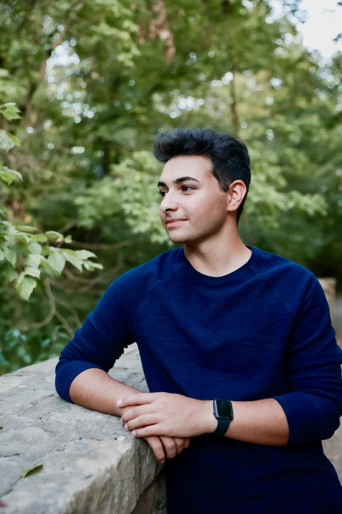

More Questions? Refer to our Contact Page
Our Team
Caitlin DominskiCaitlin is a Freshman Emerging technology in Business and Design Major at Miami University. Interests include graphic design, photography, and soccer. She hopes to pursue some sort of event planning, design or photography combination as a career. |

|
|  |
Jacob ShachterJacob is a Freshman Emerging Technology in Business and Design Major at Miami University. His interests include gaming, tennis, design, and spending time with friends. He hopes to pursue a career in User Interface Design after graduating. |
Libby SchuchardtLibby is a Freshman Games and Simulation Major at Miami University. Her interests include art, writing, video games, and singing. She plans to pursue writing for a big gaming company as a career. |

|

|
Matthew FurneeMatthew is a Freshman Games and Simulation Major at Miami University. His interests include video games, dungeons and dragons, magic the gathering, and pretty much anything Japanese. He hopes to start and indie game company someday. |
Michael SlackMichael is a Freshman Games and Simulation Major with a Theater Minor at Miami University. His interests include theater, creative writing, and gaming. He hopes to pursue a career as either a game designer or a game writer after graduating. |

|